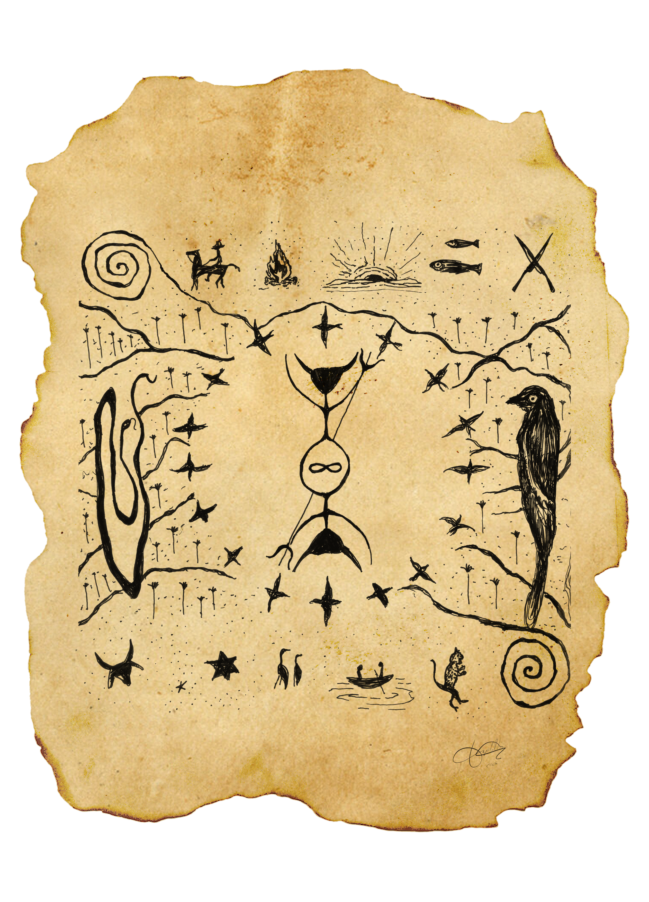

as vozes no meio do redemunho
um percurso guiado pela obra
Clique nas figuras para ouvir suas vozes. Cada elipse guarda uma fala do redemunho.

um percurso guiado pela obra
Clique nas figuras para ouvir suas vozes. Cada elipse guarda uma fala do redemunho.